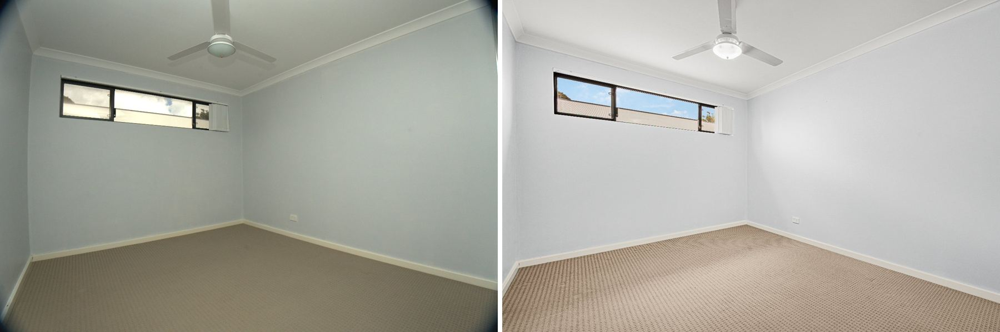
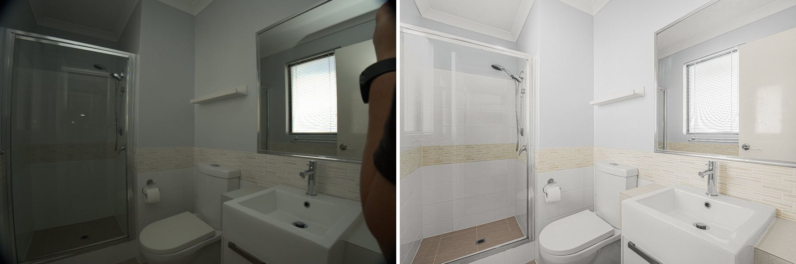
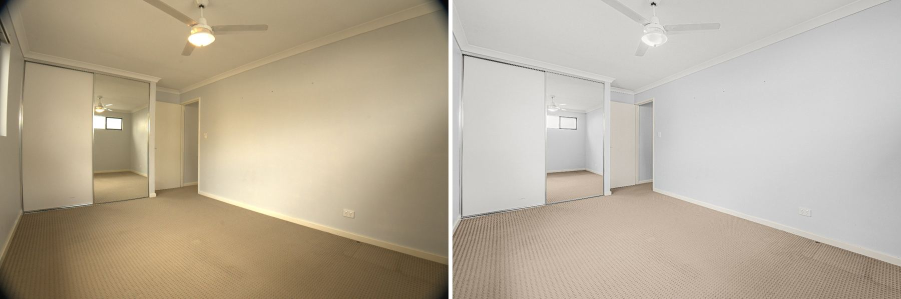

1 job(s) · 3 item(s) · Baker Production QC
Flash missing in most rooms, and too dark when used
Of 8 key rooms checked, only 3 had a flash frame (bathroom, bedroom 01883, ensuite 01894). Where it fired, the brightest whites sat 2.4-2.7 stops below clipping; aim for about 1 stop. Add one flash frame per room and lift flash power or ISO.

You are in the bathroom mirror
The bathroom flash frame shows the photographer's arm and camera in the mirror. The editor cleaned it up this time; step out of the mirror line or shoot from the doorway angle.

Ceiling lights on add a warm cast
Ceiling lights were on in several bedrooms, so the ambient frames render warm/yellow under daylight balance. Turn them off for even, true colour (the editor corrected it well here).
